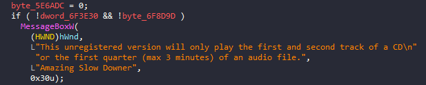
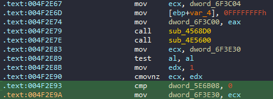

Every now and then I pick up my Ibanez 350DXZ and play some trash metal guitar solos.
Not having a “good ear” (only excellent taste in music), I always find it helpful to slow down the tracks to better understand what notes are being hit.
And no program slows music down without changing the pitch better than Amazing Slow Downer.
Let’s have a look at the latest version (3.7.2) for Windows.
As the initial popup points out, the unregistered free trial (092f9dad773ee330d8672849dede18ea) only plays the first and second track of a CD or the first quarter (max 3 minutes) of an audio file.

Of course, this is not what we are looking for.
So after playing around a bit, we notice that - when closing the program - a text file called “Order.txt” appears to the user, showing how to order the full version.

Time to load ASD in our favorite disassembler and look for “Order.txt” via Search Text (ALT+T). The only occurrence resides in the following portion of code.

This means that dword_6F3E30 returns true if its value is zero (i.e., false).
As a matter of fact, the variable is indeed related to the popup seen initially.

By tracing it back via cross-references (X), it seems that dword_6F3E30 is being set at the address 0x004F2E93.

The code compares the value at the memory address dword_6F3E30 with zero using the cmp instruction.
The content of ECX is thus assigned to it based on the outcome of the comparison.
Let’s patch that instruction with x64dbg by moving the value “1” directly into ECX and filling with NOPs the instruction size difference.

Et voilà!
Ready to play any track without time limits.